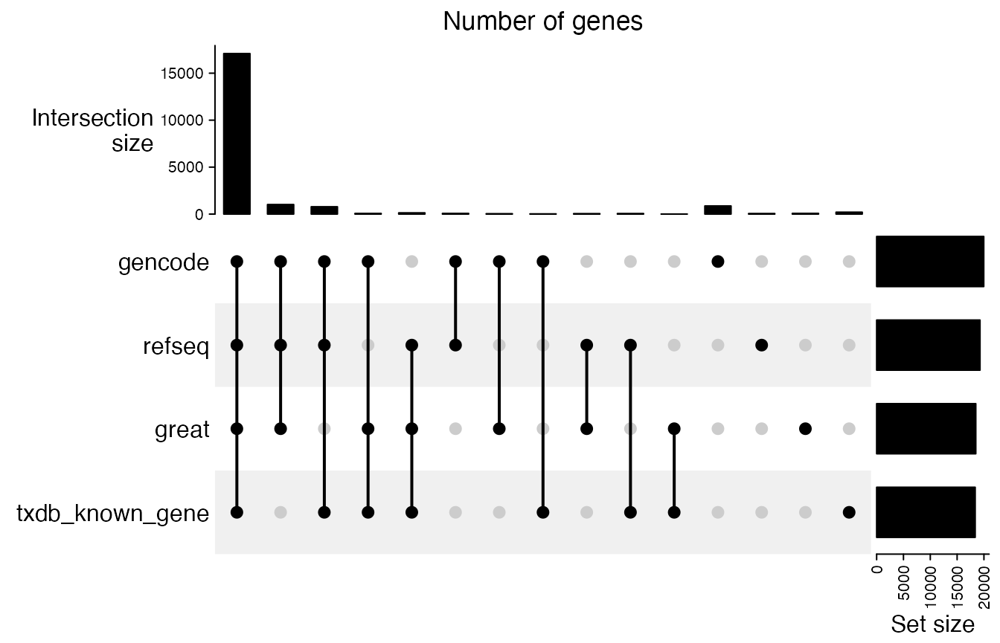
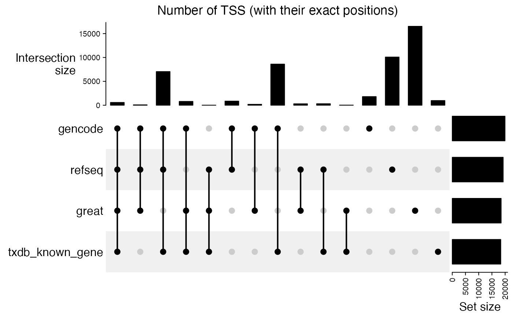
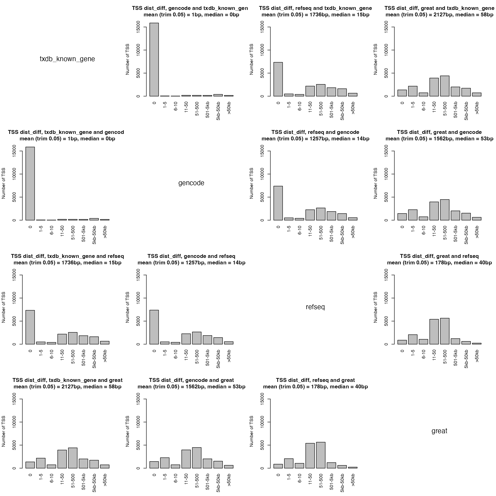
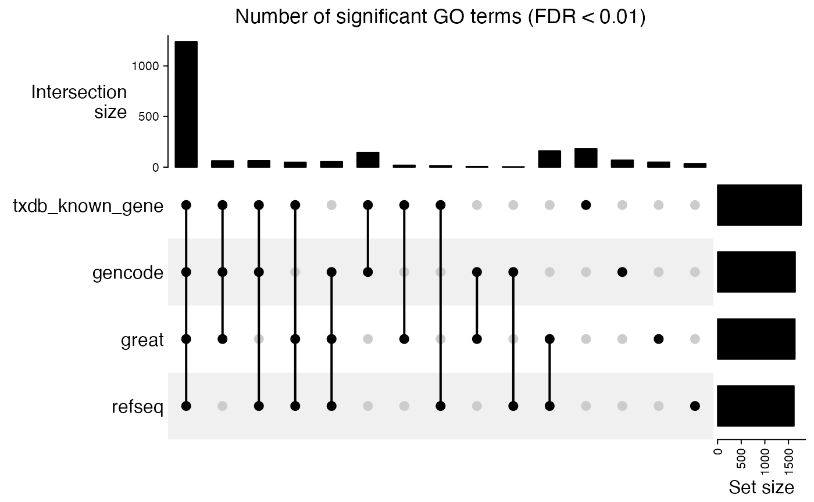

vignettes/suppl_compare_tss.Rmd
suppl_compare_tss.Rmdgreat() supports various sources to obtain gene TSS. The sources can be one of:
TxDb.* package such as TxDb.Hsapiens.UCSC.hg38.knownGene,In this document, we will compare different TSS sources and their influence on GREAT enrichment analysis.
We use human genome hg38 here because there will be gene ID conversions (e.g. from Ensembl ID to Entrez ID for Gencode annotation), using the newest genome annotation version will reduce the inconsistency between different sources.
The helper function getTSS() extracts TSS from a specific source. Note genes in the four sources are protein-coding genes.
## Warning: package 'S4Vectors' was built under R version 4.3.2
tss_txdb = getTSS("TxDb.Hsapiens.UCSC.hg38.knownGene")
tss_gencode = getTSS("gencode_v40")
tss_refseq = getTSS("refseq:hg38")
tss_great = getTSS("great:hg38")Gene IDs in tss_gencode are Ensembl gene IDs, and gene IDs in tss_great are gene symbols. We convert them to Entrez gene IDs.
library(org.Hs.eg.db)
map = unlist(as.list(org.Hs.egENSEMBL2EG))
new_gene_id = map[tss_gencode$gene_id]
tss_gencode$gene_id[!is.na(new_gene_id)] = new_gene_id[!is.na(new_gene_id)]
map = unlist(as.list(org.Hs.egSYMBOL2EG))
new_gene_id = map[tss_great$gene_id]
tss_great$gene_id[!is.na(new_gene_id)] = new_gene_id[!is.na(new_gene_id)]We put all TSS objects into a single list:
tss_lt = list(
txdb_known_gene = tss_txdb,
gencode = tss_gencode,
refseq = tss_refseq,
great = tss_great
)
tss_lt = lapply(tss_lt, sort)We first look at the overlap of genes. It basically shows all five sources almost contain the same set of genes.
library(ComplexHeatmap)
lt = lapply(tss_lt, function(x) {
unique(x$gene_id)
})
cm = make_comb_mat(lt)
UpSet(cm, column_title = "Number of genes")
Next we look at the overlap of TSS with their exact positions. There are quite a large disagreement between different TSS sources.
lt = lapply(tss_lt, function(x) {
unique(paste0(strand(x), seqnames(x), ":", start(x)))
})
cm = make_comb_mat(lt)
UpSet(cm, column_title = "Number of TSS (with their exact positions)")
Next we compare difference of TSS locations in different sources. We first take the common genes in all four sources.
tss_lt2 = lapply(tss_lt, function(x) {
tb = table(x$gene_id)
dp = names(tb[which(tb == 1)])
x = x[x$gene_id %in% dp]
names(x) = x$gene_id
x
})
cn = tss_lt2[[1]]$gene_id
for(i in 2:length(tss_lt2)) {
cn = intersect(cn, tss_lt2[[i]]$gene_id)
}
length(cn)## [1] 17069
tss_lt2 = lapply(tss_lt2, function(x) x[cn])Next we perform pairwise comparisons for every pair of TSS sources.
library(GetoptLong)
compare_tss_pos = function(tss1, tss2, name1, name2, ...) {
d1 = start(tss1)
d2 = start(tss2)
diff = abs(d1 - d2)
v = numeric()
v["0"] = sum(diff == 0)
v["1-5"] = sum(diff >= 1 & diff <= 5)
v["6-10"] = sum(diff >= 6 & diff <= 10)
v["11-50"] = sum(diff >= 11 & diff <= 50)
v["51-500"] = sum(diff >= 51 & diff <= 500)
v["501-5kb"] = sum(diff >= 501 & diff <= 5000)
v["5kb-50kb"] = sum(diff >= 5001 & diff <= 50000)
v[">50kb"] = sum(diff >= 50001)
barplot(v, ylab = "Number of TSS",
main = qq("TSS dist_diff, @{name1} and @{name2}\nmean (trim 0.05) = @{round(mean(diff, trim = 0.05))}bp, median = @{median(diff)}bp"),
las = 3, ...)
}
par(mfrow = c(4, 4))
for(i in 1:4) {
for(j in 1:4) {
if(i == j) {
plot(c(0, 1), c(0, 1), type = "n", axes = FALSE, ann = FALSE)
text(0.5, 0.5, names(tss_lt2)[i], cex = 1.5)
} else {
compare_tss_pos(tss_lt2[[j]], tss_lt2[[i]], names(tss_lt2)[j], names(tss_lt2)[i], ylim = c(0, 16000))
}
}
}
Top 10 TSS which the highest variability of their positions:
library(matrixStats)
pos_mat = do.call(cbind, lapply(tss_lt2, start))
v = rowSds(pos_mat)
ind = order(v, decreasing = TRUE)[1:10]
pos_mat2 = data.frame("chr" = as.vector(seqnames(tss_lt2[[1]])), pos_mat, Entrez_ID = tss_lt2[[1]]$gene_id)
pos_mat2 = pos_mat2[ind, ]
library(org.Hs.eg.db)
map = unlist(as.list(org.Hs.egSYMBOL))
pos_mat2$Entrez_ID = qq("[@{pos_mat2$Entrez_ID}](https://www.genecards.org/cgi-bin/carddisp.pl?gene=@{map[pos_mat2$Entrez_ID]}#genomic_location)", collapse = FALSE)
kable(pos_mat2, row.names = FALSE)| chr | txdb_known_gene | gencode | refseq | great | Entrez_ID |
|---|---|---|---|---|---|
| chr1 | 58546734 | 58546734 | 57424060 | 57424058 | 1600 |
| chrX | 37349330 | 38561542 | 38561542 | 38561370 | 7102 |
| chr11 | 41459773 | 41459773 | 41459652 | 40294115 | 57689 |
| chr3 | 75906695 | 75906695 | 77040099 | 75906695 | 6092 |
| chr8 | 31639222 | 31639222 | 32548311 | 32548635 | 3084 |
| chr17 | 34157294 | 34174964 | 33293295 | 33292989 | 40 |
| chr10 | 55627942 | 55627942 | 54801231 | 54801292 | 65217 |
| chr16 | 73891871 | 73891871 | 73048128 | 73131095 | 463 |
| chr16 | 5239802 | 5239802 | 6019024 | 6019703 | 54715 |
| chr3 | 24687887 | 24687887 | 25428263 | 25428311 | 5915 |
Although TSSs have different positions in different sources, they are located quite closely. We next check whether the inconsistency of TSS positions affects the GREAT enrichment analysis.
In the next example, we use a dataset from UCSC table browser. The parameters are as follows:
clade = Mammal
genome = Human
assembly = GRCh38/hg38
group = Regulation
track = TF ChIP
table = A549 MYC (encTfChipPkENCFF542GMN)Similarly, we perform local GREAT with four different TSS sources.
df = read.table("data/A549_MYC_encTfChipPkENCFF542GMN_hg38.bed")
df = df[df[, 1] %in% paste0("chr", c(1:22, "X", "Y")), ]
gr = GRanges(seqnames = df[, 1], ranges = IRanges(df[, 2]+1, df[, 3]))
res_txdb = great(gr, "GO:BP", "TxDb.Hsapiens.UCSC.hg38.knownGene", min_gene_set_size = 0)
res_gencode = great(gr, "GO:BP", "gencode_v40", min_gene_set_size = 0)
res_refseq = great(gr, "GO:BP", "refseq:hg38", min_gene_set_size = 0)
res_great = great(gr, "GO:BP", "great:hg38", min_gene_set_size = 0)
res_list = list(
txdb_known_gene = res_txdb,
gencode = res_gencode,
refseq = res_refseq,
great = res_great
)We check the overlap of significant GO terms:
tb_list = lapply(res_list, function(x) getEnrichmentTable(x))
lt = lapply(tb_list, function(x) {
x$id[x$p_adjust < 0.01]
})
cm = make_comb_mat(lt)
UpSet(cm, column_title = "Number of significant GO terms (FDR < 0.01)")
tb_list = lapply(res_list, function(x) getEnrichmentTable(x))
cn = intersect(tb_list[[1]]$id, intersect(tb_list[[2]]$id, intersect(tb_list[[3]]$id, tb_list[[4]]$id)))
vl = lapply(tb_list, function(x) {
rownames(x) = x$id
log2(x[cn, "fold_enrichment"])
})
par(mfrow = c(4, 4))
for(i in 1:4) {
for(j in 1:4) {
if(i == j) {
plot(c(0, 1), c(0, 1), type = "n", axes = FALSE, ann = FALSE)
text(0.5, 0.5, names(vl)[i], cex = 1.5)
} else {
plot(vl[[j]], vl[[i]], xlab = names(vl)[j], ylab = names(vl)[i], pch = 16,
col = "#00000020", main = "log2(Fold enrichment)",
xlim = c(-6, 6), ylim = c(-6, 6))
}
}
}The results shows the enrichments are very consistent for the four different TSS sources.
## R version 4.3.1 (2023-06-16)
## Platform: x86_64-apple-darwin20 (64-bit)
## Running under: macOS Ventura 13.2.1
##
## Matrix products: default
## BLAS: /Library/Frameworks/R.framework/Versions/4.3-x86_64/Resources/lib/libRblas.0.dylib
## LAPACK: /Library/Frameworks/R.framework/Versions/4.3-x86_64/Resources/lib/libRlapack.dylib; LAPACK version 3.11.0
##
## locale:
## [1] C/UTF-8/C/C/C/C
##
## time zone: Europe/Berlin
## tzcode source: internal
##
## attached base packages:
## [1] grid stats4 stats graphics grDevices utils datasets
## [8] methods base
##
## other attached packages:
## [1] matrixStats_1.2.0 GetoptLong_1.0.5 ComplexHeatmap_2.18.0
## [4] org.Hs.eg.db_3.17.0 AnnotationDbi_1.62.2 Biobase_2.60.0
## [7] rGREAT_2.5.4 GenomicRanges_1.52.1 GenomeInfoDb_1.36.4
## [10] IRanges_2.36.0 S4Vectors_0.40.2 BiocGenerics_0.48.1
## [13] knitr_1.44
##
## loaded via a namespace (and not attached):
## [1] DBI_1.1.3
## [2] bitops_1.0-7
## [3] biomaRt_2.56.1
## [4] rlang_1.1.2
## [5] magrittr_2.0.3
## [6] clue_0.3-65
## [7] compiler_4.3.1
## [8] RSQLite_2.3.1
## [9] GenomicFeatures_1.52.2
## [10] png_0.1-8
## [11] systemfonts_1.0.5
## [12] vctrs_0.6.4
## [13] stringr_1.5.0
## [14] pkgconfig_2.0.3
## [15] shape_1.4.6
## [16] crayon_1.5.2
## [17] fastmap_1.1.1
## [18] magick_2.8.0
## [19] ellipsis_0.3.2
## [20] dbplyr_2.3.4
## [21] XVector_0.40.0
## [22] utf8_1.2.3
## [23] promises_1.2.1
## [24] Rsamtools_2.16.0
## [25] rmarkdown_2.25
## [26] ragg_1.2.6
## [27] purrr_1.0.2
## [28] bit_4.0.5
## [29] xfun_0.40
## [30] zlibbioc_1.46.0
## [31] cachem_1.0.8
## [32] jsonlite_1.8.8
## [33] progress_1.2.2
## [34] blob_1.2.4
## [35] later_1.3.2
## [36] DelayedArray_0.26.7
## [37] BiocParallel_1.34.2
## [38] cluster_2.1.4
## [39] parallel_4.3.1
## [40] prettyunits_1.2.0
## [41] R6_2.5.1
## [42] bslib_0.6.1
## [43] stringi_1.7.12
## [44] RColorBrewer_1.1-3
## [45] rtracklayer_1.60.1
## [46] jquerylib_0.1.4
## [47] iterators_1.0.14
## [48] Rcpp_1.0.11
## [49] SummarizedExperiment_1.30.2
## [50] httpuv_1.6.13
## [51] Matrix_1.6-1.1
## [52] tidyselect_1.2.0
## [53] abind_1.4-5
## [54] yaml_2.3.7
## [55] doParallel_1.0.17
## [56] codetools_0.2-19
## [57] curl_5.1.0
## [58] lattice_0.21-9
## [59] tibble_3.2.1
## [60] shiny_1.8.0
## [61] KEGGREST_1.40.1
## [62] evaluate_0.22
## [63] desc_1.4.2
## [64] BiocFileCache_2.8.0
## [65] xml2_1.3.6
## [66] circlize_0.4.15
## [67] Biostrings_2.68.1
## [68] pillar_1.9.0
## [69] filelock_1.0.2
## [70] MatrixGenerics_1.12.3
## [71] TxDb.Hsapiens.UCSC.hg19.knownGene_3.2.2
## [72] DT_0.30
## [73] foreach_1.5.2
## [74] generics_0.1.3
## [75] rprojroot_2.0.3
## [76] RCurl_1.98-1.12
## [77] hms_1.1.3
## [78] xtable_1.8-4
## [79] glue_1.6.2
## [80] tools_4.3.1
## [81] BiocIO_1.10.0
## [82] TxDb.Hsapiens.UCSC.hg38.knownGene_3.17.0
## [83] GenomicAlignments_1.36.0
## [84] fs_1.6.3
## [85] XML_3.99-0.14
## [86] Cairo_1.6-2
## [87] colorspace_2.1-0
## [88] GenomeInfoDbData_1.2.10
## [89] restfulr_0.0.15
## [90] cli_3.6.2
## [91] rappdirs_0.3.3
## [92] textshaping_0.3.7
## [93] fansi_1.0.5
## [94] S4Arrays_1.0.6
## [95] dplyr_1.1.3
## [96] sass_0.4.8
## [97] digest_0.6.33
## [98] rjson_0.2.21
## [99] htmlwidgets_1.6.2
## [100] memoise_2.0.1
## [101] htmltools_0.5.7
## [102] pkgdown_2.0.7
## [103] lifecycle_1.0.4
## [104] httr_1.4.7
## [105] mime_0.12
## [106] GlobalOptions_0.1.2
## [107] GO.db_3.17.0
## [108] bit64_4.0.5